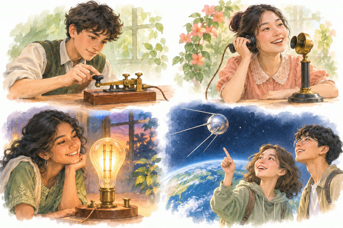

Listen to the text
Speed:

Press a switch, and the room is full of light. Touch a screen, and your friend's phone rings on the other side of the world. Behind these everyday miracles there are four inventions and thousands of failed experiments. The telegraph. In the 1830s and 1840s inventors in several countries learnt to send signals along a wire with the help of electricity. Samuel Morse created a code of dots and dashes for the letters. In 1866 a cable was successfully laid on the bottom of the Atlantic Ocean. A message from London to New York, which used to travel ten days by ship, now arrived in minutes. The telephone. Alexander Graham Bell was a teacher of deaf children. His mother and his wife were both deaf, and all his life he studied sound and speech. In 1876 he received a patent for a device that could send a human voice along a wire. Soon cities built telephone exchanges, where operators connected callers by hand. The light bulb. Many scientists tried to make electric light before Thomas Edison. The problem was the filament, the thin thread inside the bulb that shines when electricity passes through it. Almost every material burnt out in a few minutes. Edison and his team tested thousands of them. In 1879 a carbonised cotton thread worked for more than thirteen hours. Later the team found something better: a filament of carbonised bamboo, which could shine for over a thousand hours. Edison is said to have joked that he had not failed. He had simply found thousands of ways that didn't work. The satellite. In October 1957 the first artificial satellite was launched into space. It was a metal ball about the size of a beach ball, and it could only send a simple radio signal. But it opened a new age. Today thousands of satellites carry our phone calls, TV programmes, weather forecasts and maps. A wire, a voice, a light and a ball in the sky. None of these inventions was the work of one lonely genius on one lucky day. Each of them needed carbon and acid, mistakes and patience, and people who were ready to try once more.
Tap any sentence to hear it again.
Сподобалось? На сайті ще більше матеріалів для вчителів!
Reader, презентації, ігри, діагностичні та контрольні роботи до підручників 1-11 класів.
Перейти на сайт materials.allaenglish.com